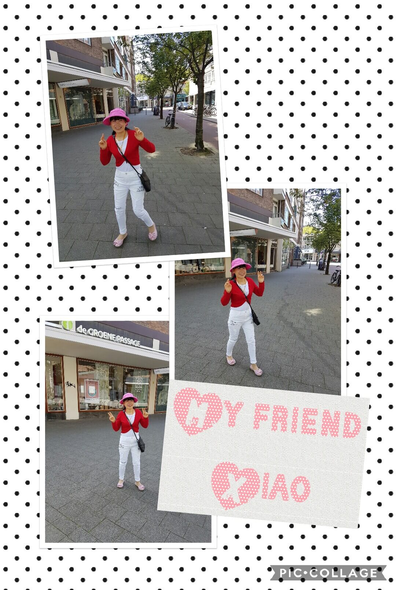

Social Life with Chinese
Guest appearences on PandaTV


Direct contact with the audience from mainland China through instant video
broadcasting on PandaTV. Together with the channel owner Shao Zhang we are
making shows about everyday life in the Netherlands. The audience can ask us
questions directly through instant chat. During the recording we speak
Chinese 100%.
Dutch Integration Language Instructor
For more than one year I have been helping Chinese people who are working or
studying in the Netherlands passing their language exams Nederlands Niveau
A2. During this period I had a lot of opportunity to practice my spoken
Chinese and increase my international network.